Overview
VIBRA는 XR과 인터랙티브 AI를 결합한 축구 중계 서비스입니다.
단순히 경기를 보는 것을 넘어, 시청자를 실시간으로 연결하고 경기에 대한
이해를 넓히며, 모든 팬에게 맞춤화된 몰입 경험을 제공합니다.
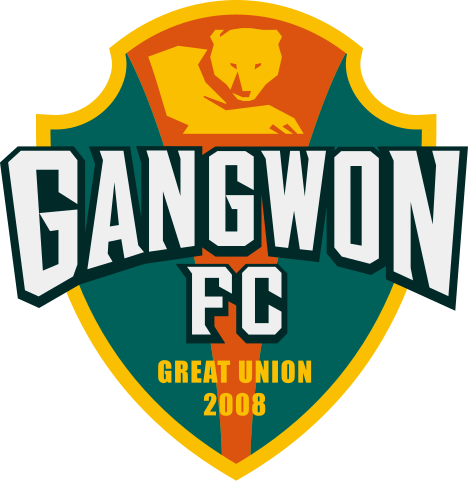
강원 FC'"> K리그'">축구 중계, 그 다음은?
신문에서 라디오, 흑백 TV에서 컬러 TV. 축구 중계는 늘 더 깊은 몰입을 향해
진화해 왔습니다. 우리는 그 다음 단계가 XR이라고 봤습니다.
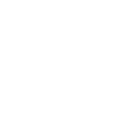
XR그렇다면, 무엇을 제공해야 하는가?
XR 기반 중계는 압도적인 현장감과 몰입을 약속합니다. 하지만 경쟁력 있고 지속 가능한 서비스가 되려면 그 이상이 필요합니다. 이 프로젝트는 미래의 XR 축구 중계 플랫폼이 제공해야 할 가치와 기능을 사용자 니즈 중심으로 탐구했습니다.
프로젝트 진행 과정
Interview Methods Design
Interviewee Recruitment
01 — RESEARCH
Quantitative Research
Desk Research
기존 자료를 통해, 현재 팬들의 시청 트렌드를 관통하는
2가지 핵심 니즈를 도출했습니다.
*한국프로스포츠협회, 2022, 2022 KOREA PROSPORTS FAN SURVEY: 프로 스포츠 관람객 성향조사 - 프로축구
Chiliz, 2024,The Global Fan Report
"자료에서 드러난 이 니즈, 실제 시청자도 똑같이 느끼고 있을까?"
그래서 경기를 주기적으로 챙겨보는 시청자를 대상으로 직접 설문을 진행했어요.
Field Research
축구 경기를 주기적으로 보는 사람을 대상으로 설문 조사를 진행해, 경기 관람 방식과
시청 태도, 경기 이해 수준, 부가 서비스 이용 현황 등을 물었습니다.
*자체 설문조사 : 온·오프라인 축구 커뮤니티 회원 102명
아는 만큼 보이니까, 더 알고싶어져요
대부분 능동적으로,
경기를 이해하면서 보려고 해요.
분석적인 관점에서 경기를 본다고 답했어요.
이렇게 이해하면서 볼수록,
경기의 재미가 커져요.
분석적으로 시청하는 이유 (복수 응답)
경기를 보면서, 경기 관련 정보를
찾기 위해 다른 서비스를 켜요.
경기 시청 중 부가 서비스를 이용한다고 답했어요.
하나로는 부족해요
커뮤니티, 분석 사이트 등 2개 이상의 서비스 이용 (복수 응답)
Next Step
"아는 만큼 재밌다'는 팬들, 정말 데이터를 가장 원하고 필요해 할까요?"
설문을 통해 확인된 분명한 '정보 니즈'가 실제 시청 환경에서도 유효한지 궁금했습니다.
Qualitative Research
설문을 기반으로 세운 가설을 인터뷰, 참여 관찰(섀도잉), 그리고 온라인 행태 관찰을 통해 검증·수정·재확인하며 인사이트를 도출했습니다.
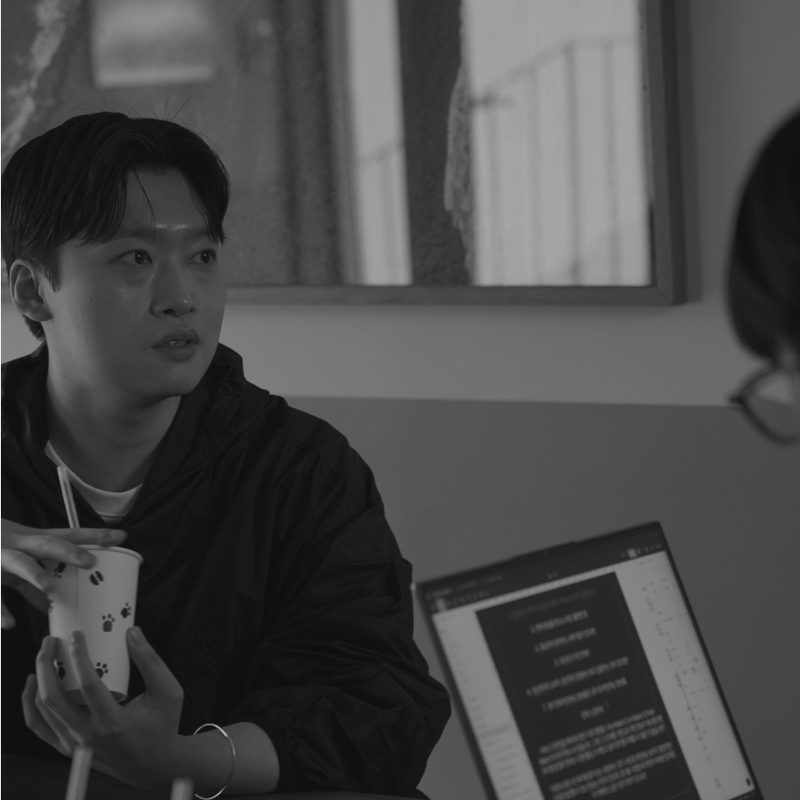
심층 인터뷰
축구 전문가 2명, 일반 유저 8명
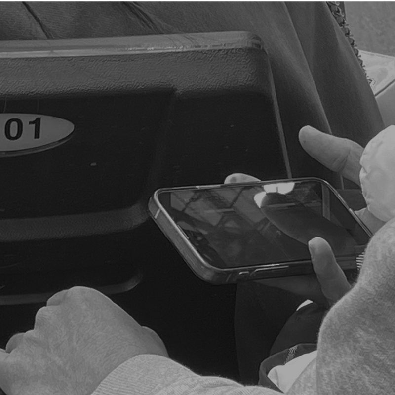
참여 관찰 (섀도잉)
경기장 현장 관람 유저 1명, 중계 방송 시청 유저 1명
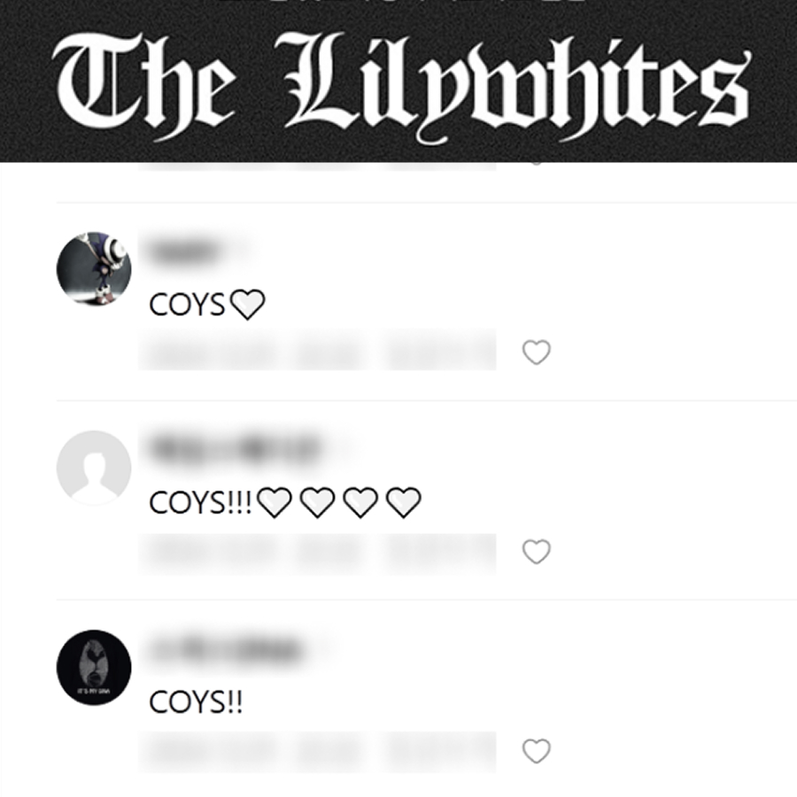
온라인 행태 관찰
경기 중 구단 팬 커뮤니티에 올라온 실시간 댓글 약 4,000건
재미를 위한 최우선 니즈는 경기 관련 심층 정보일 것이다.
검증 결과정보 확인이 오히려 경기 몰입을 방해하는 요소로 작용한다.
온전히 몰입해 보는 니즈가 가장 클 것이다.
검증 결과실제 온전히 몰입하는 시간은 짧고, 지속적으로 멀티 태스킹을 한다.
실제 관찰된 가장 큰 니즈
경기를 함께 시청하는 사람들과의 소통과 감정 공유
XR 디바이스의 외부 채널 차단
고글 형태의 한계로 인해, 정보 확인이나 소통을 위해서는 반드시 기기를 벗어야 함.
단절 없는 경험
디바이스를 벗지 않고도 소통 등 다른 활동이 XR 환경 내에서 자연스럽게 이어져야 함.
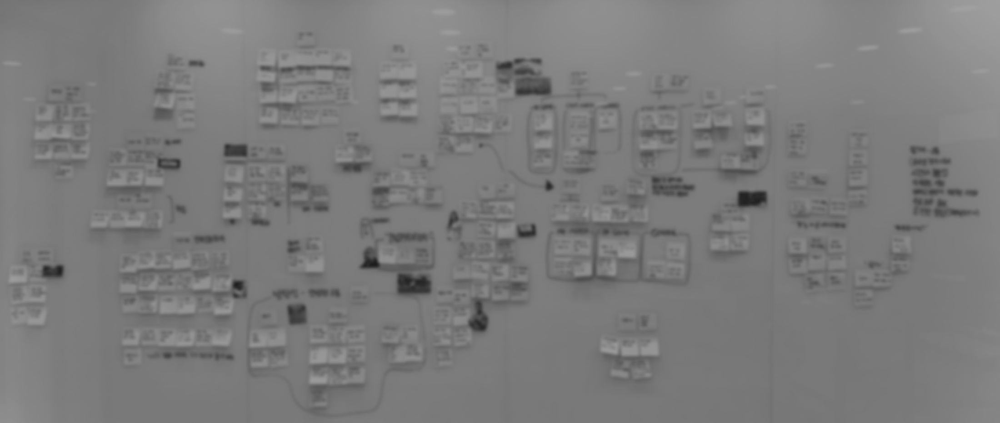
리서치 과정에서 확인한 여러 페인 포인트와 인사이트를 종합해, 서비스의 6가지 컨셉 키워드를 도출했어요.
내 방식대로
사전 정보 제공
실시간 경기 브라우징
Skybox 커스터마이징
실시간 보조 정보 확인
타 사용자·AI와 인터랙션
멀티 채널 미디어 시청
'찐'한 순간 다시 보기
나의 업적 확인
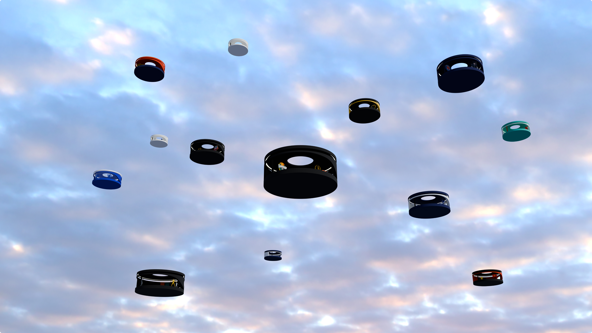
Skybox
나만의 로비 공간
서비스에 접속했을 때 나오는 개인 공간입니다. 경기장의 스카이 박스를 모티브로 만들어진 공간으로,
각각의 유저는 이 공간에서 1. 시청할 경기, 하이라이트 등을 찾아보거나 2. 친구와 소통할 수 있고,
3. 업적을 통해 획득한 토큰으로 자신의 팬심을 시각화하고 공간을 커스터마이징 할 수 있습니다.
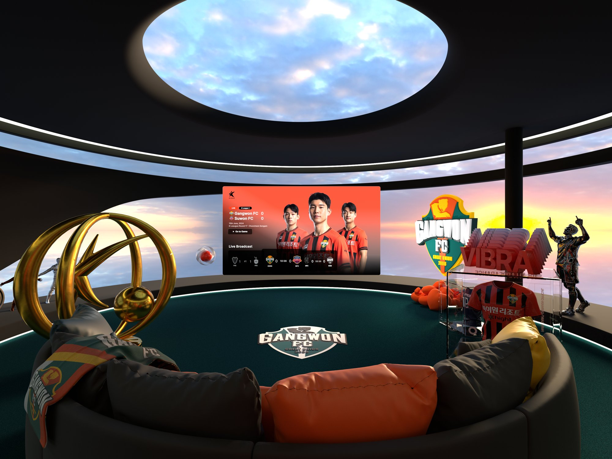
1.시청할 경기 브라우징
2.친구와 소통
3.업적 토큰 - 공간 커스터마이징
SKYBOX 공간과, 업적 기반 3D 토큰 에셋 6종 등을 제작하였습니다.
모든 토큰은 클릭외에도 옮기고 던지는 등 인터랙션이 가능합니다.
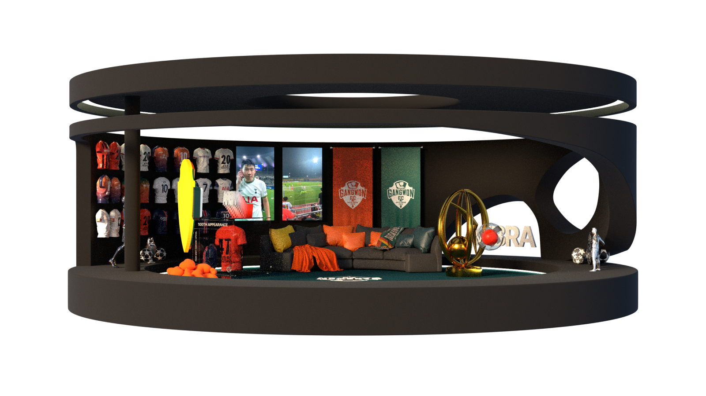
스카이박스
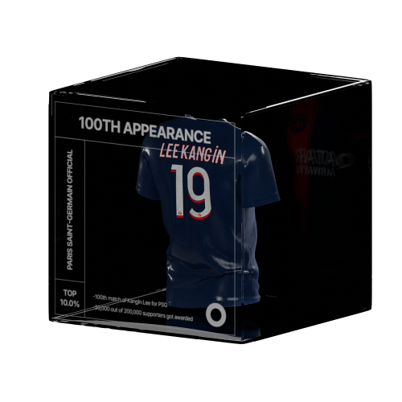
기념 유니폼
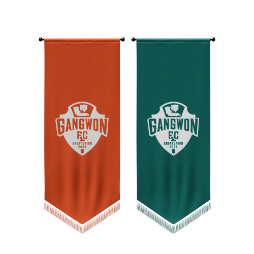
강원FC 페넌트
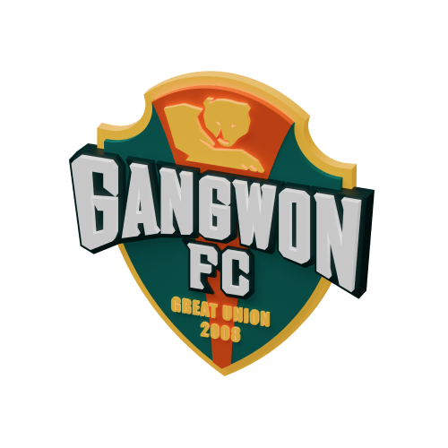
강원FC 엠블럼
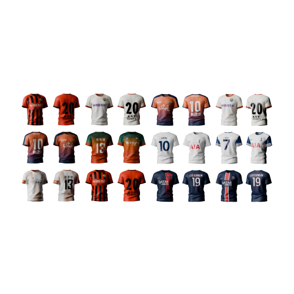
시즌별, 구단별 유니폼
K리그 트로피
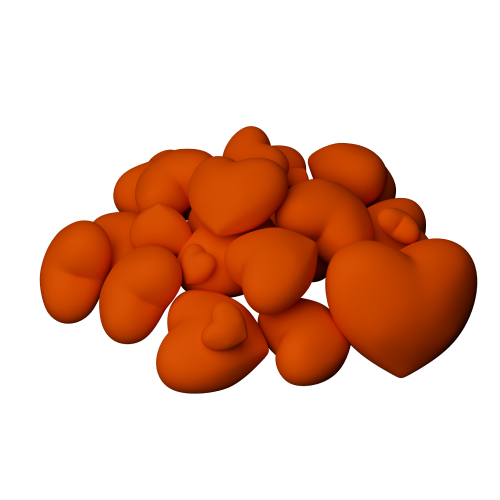
강원FC 응원하트
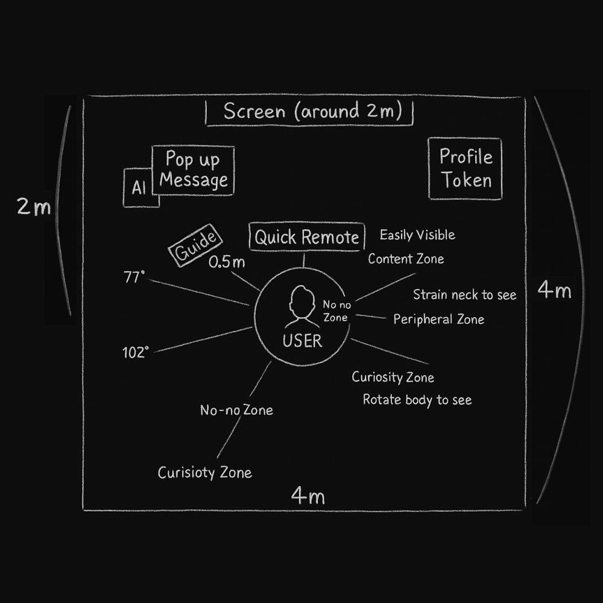
VR 공간의 거리·시야각을 고려한 배치 스케치
3D 오브젝트 인터랙션
In Stadium
원하는 위치에서, 원하는 방식으로
중계 환경을 사용자 본인의 취향에 맞게 조정하고, 경기를 더 재미있게 즐길 수 있도록 돕습니다.
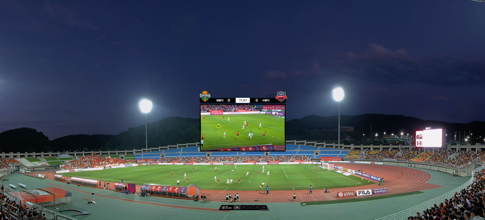
360° 완전한 VR 경기장 — 실제 경기장 관객 사이에 있는 것처럼, 현장의 분위기 느끼며 경기 시청
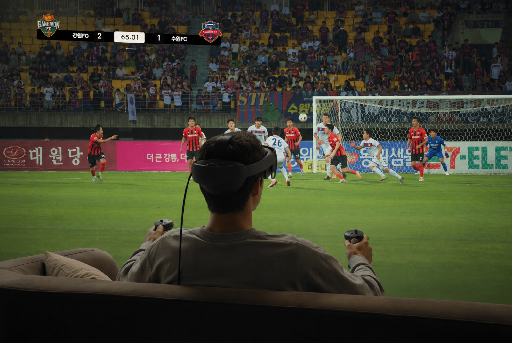
1.자유로운 시청 환경
원하는 위치에서 원하는 방식으로. 초개인화된 시청 환경
2.손쉬운 경기 정보 탐색
디바이스를 벗지 않고도 손쉽게. 리그, 팀 , 선수 정보, 경기 전술 등 다양한 정보 실시간 확인
3.소셜 : 친구와 함께 보기
원하는 친구와 음성 대화하며 경기 함께 시청
4.소셜 : AI 기반 통합 메신저
디바이스를 벗을 필요 없이, 연동된 계정 기반으로 가족, 친구들과 소통
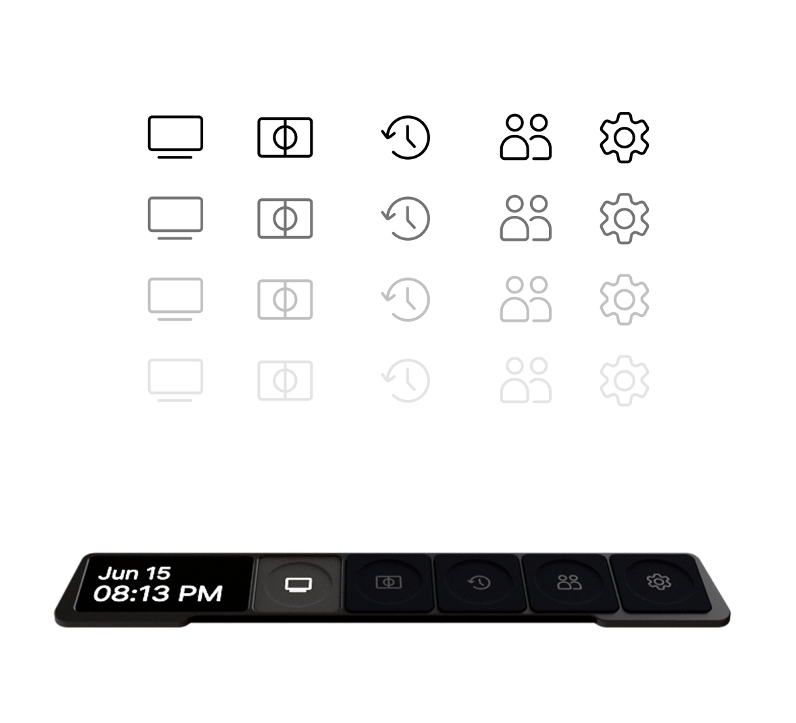
5.퀵리모트
경기 중 자주 사용되는 기능 5가지를 숏컷으로 설정
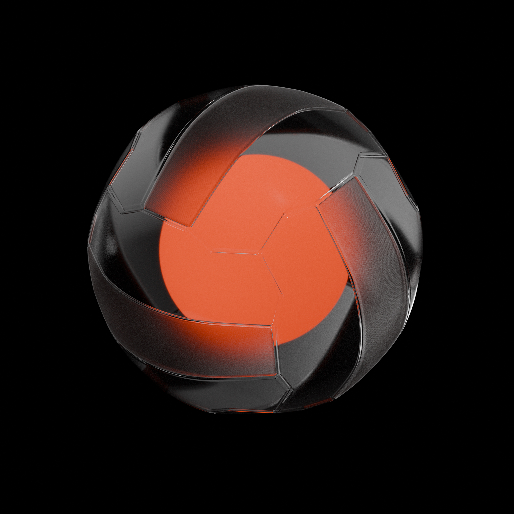
VIVA AI
VIVA는 최초의 축구공을 모티브로 디자인된 AI 어시스턴트입니다. 축구 시청 경험을 한층 끌어올리기 위해 생동감(Vibrancy), 선명함(Vividness), 경쾌함(Bounce)을 핵심 컨셉으로 삼았으며, 음성·텍스트·제스처를 아우르는 멀티모달 인터페이스를 통해 마치 친구처럼 자연스러운 상호작용을 제공합니다.
음성 인식
알림
감정 공유
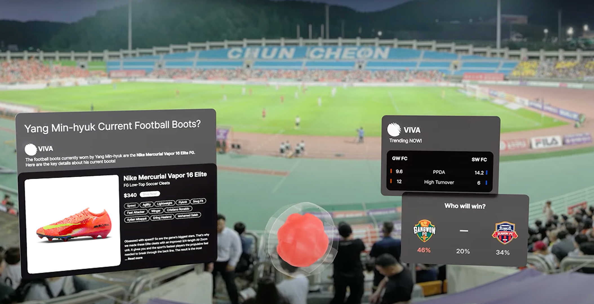
경기와 관련된 실시간 정보뿐만 아니라, "47번 선수가 신고 있는 축구화 뭐야?"와 같은 사소한 호기심까지. VIVA AI가 명쾌하게 해결해줍니다.
Interaction
사용자의 행동을 인터랙션으로
세밀한 관찰을 통해 실제 축구 관람 중 공통적으로 자주 나타나는 행동과 포즈를 파악했습니다.
이를 서비스 속 제스처·컨트롤러 인터랙션으로 전환해, 자연스럽고 직관적인 경험을 구현했습니다.
1.캡처
손가락으로 카메라 모양을 만들어 보고 있는 장면 그대로 캡쳐합니다.
캡쳐 후 연동된 소셜 네트워크에 바로 업로드할 수 있습니다.
2.이모지
손가락을 총 모양으로 만들어서 이모지를 발사합니다.
좋아요, 웃겨요, 화나요 등 다양한 감정을 재밌는 방식으로 표현할 수 있습니다.
3.다이나믹 햅틱
득점 찬스, 실점 위기 등 중요한 순간.
컨트롤러의 진동을 통해 긴장감을 극대화합니다.
4.세레머니
득점의 순간, 컨트롤러를 머리 위로 들어 올립니다.
축하 이펙트가 재생되며 승리의 기쁨을 더합니다.
XR 디바이스와 서비스에 익숙하지 않은 유저들을 위해 3D 애니메이션 기반 인터랙션 가이드를 제작,
필요한 타이밍에 맞춰 튜토리얼 형식으로 제공하였습니다.
1.클릭
2.잡기 & 이동
3.캡처
4.이모지
Play Film
실제 플레이 영상
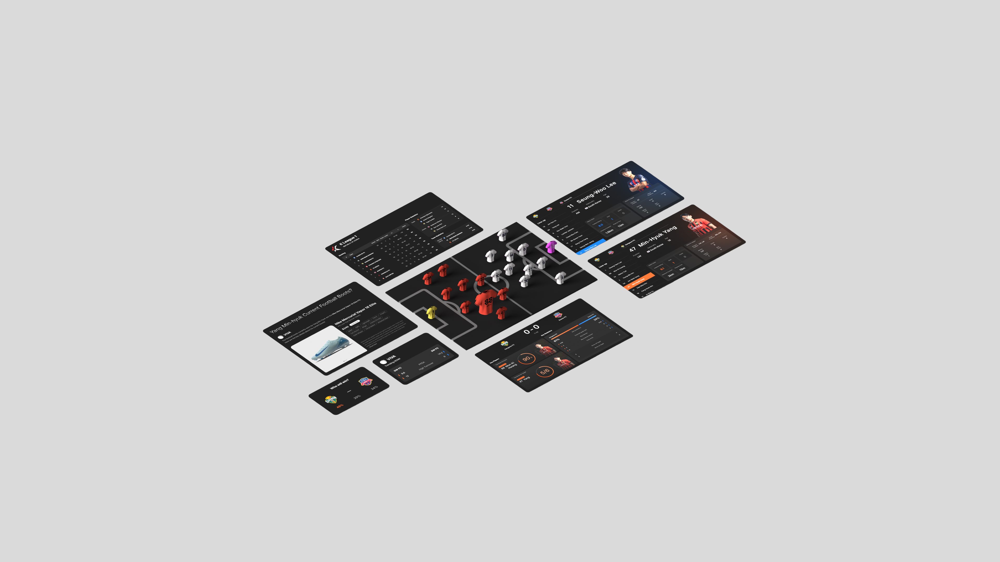
현장감을 담아낸 360° 레코딩
더 생생한 현장감, 더 높은 몰입감을 위해 K리그 현장을 직접 담았습니다.
한국프로축구연맹 및 강원FC와 협력하여 Insta360 Titan 카메라로 실제 경기장 환경을 촬영했습니다.
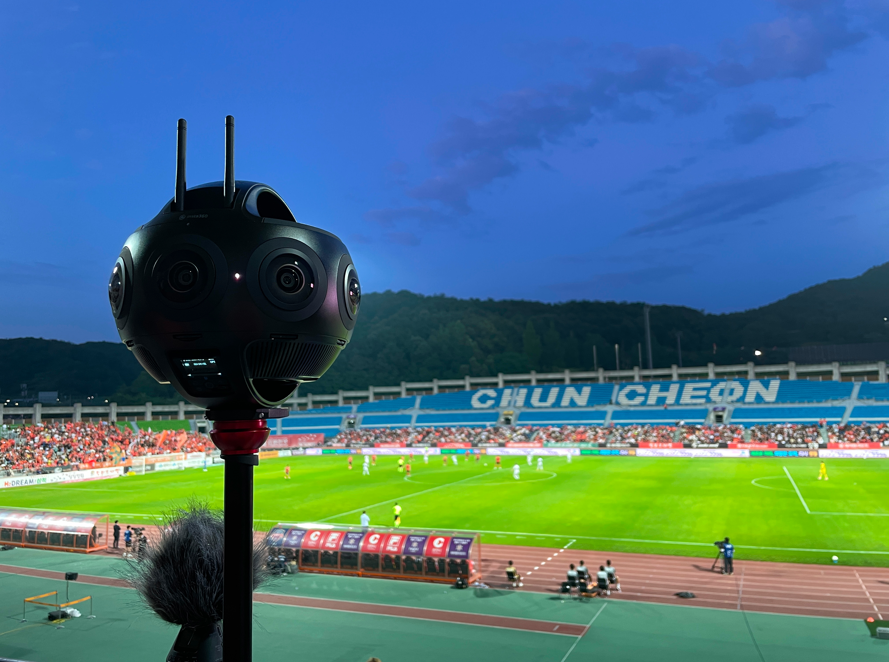
Project Archive
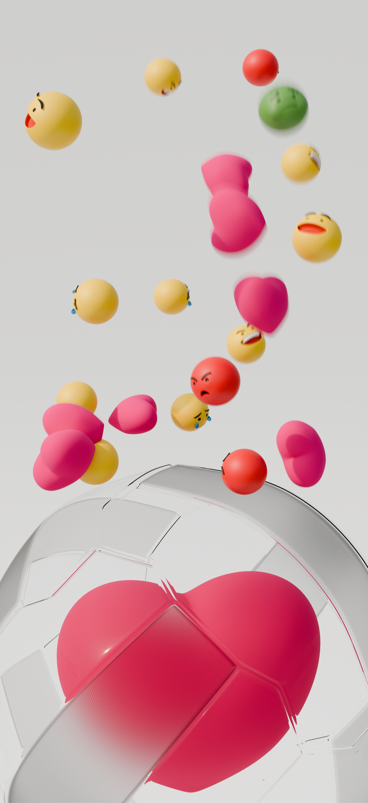